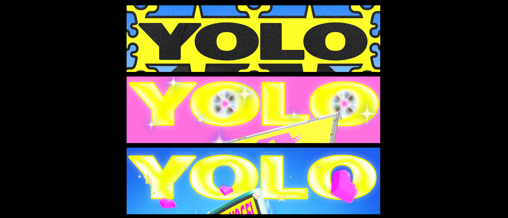
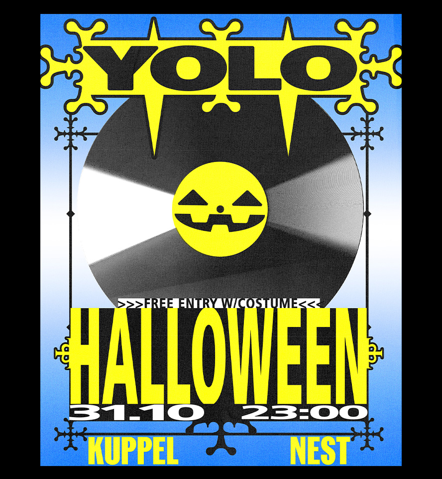

Yolo
Poster
Yolo ist eine Partyreihe in der Kuppel Basel. Motto der Parties ist "bunt, kitsch, 2016, i got a glock in my 'rari, over the top". Es sind bisher 3 Poster in der Reihe entsatnden: Mai, September & das Neuste für Halloween.
In Zusammenarbeit mit
> Kuppel Basel
